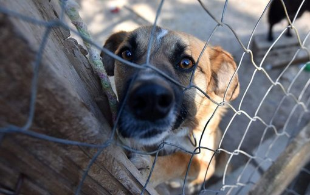
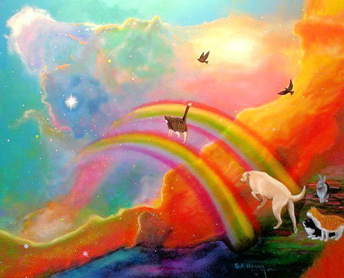

Članci
Uhvati – Steriliziraj – Vrati
Projekt sterilizacije mačaka “Uhvati – Steriliziraj – Vrati” provodi se u cijelome svijetu i pokazao se jedinim najjeftinijim, najhumanijim i najučinkovitijim rješenjem kontroliranog razmnožavanja mačaka. Više ...

Uvjeti za udomljavanje pasa
S obzirom na to da radimo isključivo u najboljem interesu naših štićenika, postoje uvjeti koje udomitelji naših štićenika moraju ispunjavati. U kratkim crtama donosimo uvjete udomljavanja koji su već dugo na snazi i molimo sve potencijalne udomitelje da najprije dobro razmisle ispunjavaju li ih zaista. Više ...
Uvjeti za udomljavanje mačaka
S obzirom na to da radimo isključivo u najboljem interesu naših štićenika, postoje uvjeti koje udomitelji naših štićenika moraju ispunjavati. U kratkim crtama donosimo uvjete udomljavanja koji su već dugo na snazi i molimo sve potencijalne udomitelje da najprije dobro razmisle ispunjavaju li ih zaista. Više ...
Postupak udomljavanja štićenika Udruge Šapica
Donosimo Vam kratak pregled koraka koje prolaze udomitelji kada žele udomiti nekoga od naših štićenika Više ...

Dolina duginog mosta
Postoji jedno mjesto znano kao dolina dugina mosta. U podnožju dugina mosta, što spaja zemlju i nebo, skriva se ta dolina sreće. Napusti li nas voljeni ljubimac, on stiže do toga posebnog, prelijepog i mirnog kutka. Više ...